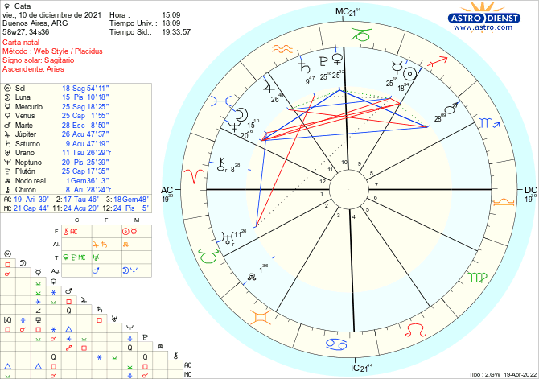

Mi Nacimiento
Hoy 10 de diciembre nací, después de estar varios meses revoloteando en la panza de mami, decide salir a conocerlos, aca les dejo los primeros comentarios sobre mi.
Mi Carta Natal
Mi Familia
- Mamá: María Florencia Caballero
- Papá: Sebastián Devich
- Hermana perruna: Brillu
Mis Datos
- Peso: 2.890 kilos
- Altura: 47 cm